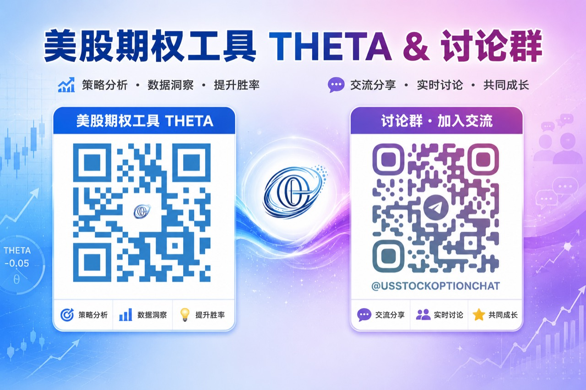

<div style="margin:0;padding:0;background:#f5f7fa;color:#2a2a34;font-size:16px;line-height:1.9;font-family:-apple-system,BlinkMacSystemFont,'SF Pro Text','PingFang SC','Hiragino Sans GB','Microsoft YaHei',Arial,sans-serif;font-variant-numeric:tabular-nums;font-feature-settings:'tnum' 1,'lnum' 1;text-align:left !important;text-align-last:left;letter-spacing:0;word-spacing:normal;white-space:normal;word-break:normal;box-sizing:border-box;"><div style="margin:0;background:#ffffff;padding:28px 22px 44px 22px;box-sizing:border-box;text-align:left !important;text-align-last:left;letter-spacing:0;word-spacing:normal;white-space:normal;word-break:normal;"><p style="display:block;width:100%;margin:0 0 12px 0;padding:0;color:#2763e9;font-size:10px;line-height:1.6;font-weight:650;letter-spacing:0.12em;text-align:center !important;text-align-last:center;word-spacing:normal;white-space:normal;word-break:normal;box-sizing:border-box;">美股 · 期权 · 资讯 · 观点</p><div style="margin:0 0 30px 0;padding:0;text-align:center !important;text-align-last:center;word-spacing:normal;white-space:normal;word-break:normal;box-sizing:border-box;"></div><div style="margin:0 0 0 0;padding:28px 0 0 0;text-align:left !important;text-align-last:left;letter-spacing:0;word-spacing:normal;white-space:normal;word-break:normal;box-sizing:border-box;"><div style="margin:0 0 12px 0;padding:0;text-align:left !important;line-height:1.2;border:0;display:flex;align-items:center;gap:10px;text-align-last:left;letter-spacing:0;word-spacing:normal;white-space:normal;word-break:normal;box-sizing:border-box;"><span style="display:inline-block;flex:0 0 auto;vertical-align:middle;color:#2763e9;font-size:12px;font-weight:850;letter-spacing:0.12em;line-height:1.2;text-transform:uppercase;border:0;box-sizing:border-box;">0 · FOCUS</span><span style="display:block;flex:1 1 auto;min-width:36px;vertical-align:middle;height:1px;margin:0 0 2px 0;background:#2763e9;line-height:1px;font-size:0;border:0;box-sizing:border-box;"></span></div><p style="margin:0 0 16px 0;padding:0;color:#2a2a34;font-size:22px;line-height:1.45;font-weight:850;text-align:left !important;letter-spacing:0;text-align-last:left;word-spacing:normal;white-space:normal;word-break:normal;box-sizing:border-box;">缩量高开低走，指数和个股已经不是一回事</p><p style="margin:0 0 16px 0;padding:0;color:#454550;font-size:16px;line-height:1.9;font-weight:400;text-align:left !important;letter-spacing:0;word-spacing:normal;white-space:normal;word-break:normal;text-align-last:left;box-sizing:border-box;">周一四大指数高开低走，成交量明显萎缩。<strong style="color:#2a2a34;font-weight:700;box-sizing:border-box;">SPX</strong> 成分股中有337只下跌，只有165只上涨，平静的指数下面其实是一片分化。上周五早盘能长时间横住，主要是正 Gamma 环境压住了波动；尾盘相关期权结算后，向下空间才被释放。</p><p style="margin:0 0 16px 0;padding:0;color:#454550;font-size:16px;line-height:1.9;font-weight:400;text-align:left !important;letter-spacing:0;word-spacing:normal;white-space:normal;word-break:normal;text-align-last:left;box-sizing:border-box;">中东局势连续升级，油价重新逼近90美元，但最活跃的资金仍然集中在 AI 和半导体，没有大规模转向能源。地缘风险还没真正进入核心仓位的定价。眼下更该警惕的不是某条突发消息，而是缩量环境里少数权重还能撑多久。</p><p style="margin:0 0 16px 0;padding:0;color:#454550;font-size:16px;line-height:1.9;font-weight:400;text-align:left !important;letter-spacing:0;word-spacing:normal;white-space:normal;word-break:normal;text-align-last:left;box-sizing:border-box;">指数与个股的离散度已经很高。同一个板块里，有的大跌，有的横盘，有的还能小涨。只看指数判断账户风险会越来越失真，仓位本身比指数颜色更重要。</p></div><div style="margin:30px 0 0 0;padding:28px 0 0 0;text-align:left !important;text-align-last:left;letter-spacing:0;word-spacing:normal;white-space:normal;word-break:normal;box-sizing:border-box;"><div style="margin:0 0 12px 0;padding:0;text-align:left !important;line-height:1.2;border:0;display:flex;align-items:center;gap:10px;text-align-last:left;letter-spacing:0;word-spacing:normal;white-space:normal;word-break:normal;box-sizing:border-box;"><span style="display:inline-block;flex:0 0 auto;vertical-align:middle;color:#2763e9;font-size:12px;font-weight:850;letter-spacing:0.12em;line-height:1.2;text-transform:uppercase;border:0;box-sizing:border-box;">1 · SEMIS</span><span style="display:block;flex:1 1 auto;min-width:36px;vertical-align:middle;height:1px;margin:0 0 2px 0;background:#2763e9;line-height:1px;font-size:0;border:0;box-sizing:border-box;"></span></div><p style="margin:0 0 16px 0;padding:0;color:#2a2a34;font-size:22px;line-height:1.45;font-weight:850;text-align:left !important;letter-spacing:0;text-align-last:left;word-spacing:normal;white-space:normal;word-break:normal;box-sizing:border-box;"><strong style="color:#2a2a34;font-weight:700;box-sizing:border-box;">GOOG</strong> 财报决定科技与半导体的跷跷板</p><p style="margin:0 0 16px 0;padding:0;color:#454550;font-size:16px;line-height:1.9;font-weight:400;text-align:left !important;letter-spacing:0;word-spacing:normal;white-space:normal;word-break:normal;text-align-last:left;box-sizing:border-box;">过去三周，资金持续离开半导体，<strong style="color:#2a2a34;font-weight:700;box-sizing:border-box;">SOXX</strong> 连续三周走弱，<strong style="color:#2a2a34;font-weight:700;box-sizing:border-box;">SMH</strong> 也承受同样压力。另一边，<strong style="color:#2a2a34;font-weight:700;box-sizing:border-box;">MSFT</strong>、<strong style="color:#2a2a34;font-weight:700;box-sizing:border-box;">GOOG</strong>、<strong style="color:#2a2a34;font-weight:700;box-sizing:border-box;">AMZN</strong>、<strong style="color:#2a2a34;font-weight:700;box-sizing:border-box;">META</strong> 的底部逐步抬高，软件和大科技维持横盘。资金在提前押注大科技削减资本支出。</p><p style="margin:0 0 16px 0;padding:0;color:#454550;font-size:16px;line-height:1.9;font-weight:400;text-align:left !important;letter-spacing:0;word-spacing:normal;white-space:normal;word-break:normal;text-align-last:left;box-sizing:border-box;">开支下调，大科技的现金流和利润率会更好，软件也能继续受益，但设备和芯片供应链会失去一部分增长预期。矛盾在于，调查中超过60%的受访者认为，大科技在2026年底前不会发出削减资本支出的信号。资金押注和公开预期站在了跷跷板两端。</p><p style="margin:0 0 16px 0;padding:0;color:#454550;font-size:16px;line-height:1.9;font-weight:400;text-align:left !important;letter-spacing:0;word-spacing:normal;white-space:normal;word-break:normal;text-align-last:left;box-sizing:border-box;">所以，本周 <strong style="color:#2a2a34;font-weight:700;box-sizing:border-box;">GOOG</strong> 财报最重要的不只是营收和利润，而是 CapEx 口径。开支维持甚至增加，近期被压到支撑位的半导体可能快速反弹，大科技和软件反而要消化预期落空；管理层如果明确释放减支信号，<strong style="color:#2a2a34;font-weight:700;box-sizing:border-box;">SOXX</strong> 和 <strong style="color:#2a2a34;font-weight:700;box-sizing:border-box;">SMH</strong> 还没跌透，大科技则可能继续抬高。</p><p style="margin:0 0 16px 0;padding:0;color:#454550;font-size:16px;line-height:1.9;font-weight:400;text-align:left !important;letter-spacing:0;word-spacing:normal;white-space:normal;word-break:normal;text-align-last:left;box-sizing:border-box;">这场跷跷板不会很快结束。市场共识仍把 AI 自由现金流的大幅释放放在2028年，2026年更像低点，2027年才逐步回升。在货币化拐点得到验证前，科技和半导体很难长期同时顺风。</p></div><div style="margin:30px 0 0 0;padding:28px 0 0 0;text-align:left !important;text-align-last:left;letter-spacing:0;word-spacing:normal;white-space:normal;word-break:normal;box-sizing:border-box;"><div style="margin:0 0 12px 0;padding:0;text-align:left !important;line-height:1.2;border:0;display:flex;align-items:center;gap:10px;text-align-last:left;letter-spacing:0;word-spacing:normal;white-space:normal;word-break:normal;box-sizing:border-box;"><span style="display:inline-block;flex:0 0 auto;vertical-align:middle;color:#2763e9;font-size:12px;font-weight:850;letter-spacing:0.12em;line-height:1.2;text-transform:uppercase;border:0;box-sizing:border-box;">2 · EARNINGS</span><span style="display:block;flex:1 1 auto;min-width:36px;vertical-align:middle;height:1px;margin:0 0 2px 0;background:#2763e9;line-height:1px;font-size:0;border:0;box-sizing:border-box;"></span></div><p style="margin:0 0 16px 0;padding:0;color:#2a2a34;font-size:22px;line-height:1.45;font-weight:850;text-align:left !important;letter-spacing:0;text-align-last:left;word-spacing:normal;white-space:normal;word-break:normal;box-sizing:border-box;"><strong style="color:#2a2a34;font-weight:700;box-sizing:border-box;">GOOG</strong> 区间很清楚，财报前不需要猜方向</p><p style="margin:0 0 16px 0;padding:0;color:#454550;font-size:16px;line-height:1.9;font-weight:400;text-align:left !important;letter-spacing:0;word-spacing:normal;white-space:normal;word-break:normal;text-align-last:left;box-sizing:border-box;"><strong style="color:#2a2a34;font-weight:700;box-sizing:border-box;">GOOG</strong> 将在7月22日盘后公布财报。期权市场以350美元为轴，给出的预期波动约为上下21美元。上沿在371至372美元附近，下沿约330美元，两边仍在大平台内部。</p><p style="margin:0 0 16px 0;padding:0;color:#454550;font-size:16px;line-height:1.9;font-weight:400;text-align:left !important;letter-spacing:0;word-spacing:normal;white-space:normal;word-break:normal;text-align-last:left;box-sizing:border-box;">正常波动即使打到区间边缘，也未必形成真正突破。财报前两天追涨杀跌，承担的是最贵的不确定性。已有持仓可以等待信息落地，没有仓位也不必为了怕错过而硬赌一个方向。</p><p style="margin:0 0 16px 0;padding:0;color:#454550;font-size:16px;line-height:1.9;font-weight:400;text-align:left !important;letter-spacing:0;word-spacing:normal;white-space:normal;word-break:normal;text-align-last:left;box-sizing:border-box;">仓位集中度也得算进去。<strong style="color:#2a2a34;font-weight:700;box-sizing:border-box;">MSFT</strong> 与 <strong style="color:#2a2a34;font-weight:700;box-sizing:border-box;">GOOG</strong> 属于同一类大科技风险暴露，两者合计超过20%以后，再加仓不会带来新的分散，只会把同一条 CapEx 逻辑放大。取消加仓不是看空 <strong style="color:#2a2a34;font-weight:700;box-sizing:border-box;">GOOG</strong>，只是组合已经押得够多。</p></div><div style="margin:30px 0 0 0;padding:28px 0 0 0;text-align:left !important;text-align-last:left;letter-spacing:0;word-spacing:normal;white-space:normal;word-break:normal;box-sizing:border-box;"><div style="margin:0 0 12px 0;padding:0;text-align:left !important;line-height:1.2;border:0;display:flex;align-items:center;gap:10px;text-align-last:left;letter-spacing:0;word-spacing:normal;white-space:normal;word-break:normal;box-sizing:border-box;"><span style="display:inline-block;flex:0 0 auto;vertical-align:middle;color:#2763e9;font-size:12px;font-weight:850;letter-spacing:0.12em;line-height:1.2;text-transform:uppercase;border:0;box-sizing:border-box;">3 · FOCUS</span><span style="display:block;flex:1 1 auto;min-width:36px;vertical-align:middle;height:1px;margin:0 0 2px 0;background:#2763e9;line-height:1px;font-size:0;border:0;box-sizing:border-box;"></span></div><p style="margin:0 0 16px 0;padding:0;color:#2a2a34;font-size:22px;line-height:1.45;font-weight:850;text-align:left !important;letter-spacing:0;text-align-last:left;word-spacing:normal;white-space:normal;word-break:normal;box-sizing:border-box;"><strong style="color:#2a2a34;font-weight:700;box-sizing:border-box;">TSLA</strong> 看盈亏比，<strong style="color:#2a2a34;font-weight:700;box-sizing:border-box;">TXN</strong> 看263美元生死线</p><p style="margin:0 0 16px 0;padding:0;color:#454550;font-size:16px;line-height:1.9;font-weight:400;text-align:left !important;letter-spacing:0;word-spacing:normal;white-space:normal;word-break:normal;text-align-last:left;box-sizing:border-box;"><strong style="color:#2a2a34;font-weight:700;box-sizing:border-box;">TSLA</strong> 最近不是资金争夺的中心，走势更像安静回落。财报同样在7月22日盘后，期权市场以370美元为轴，预期波动约25美元，下沿345美元，上沿395美元。对正股波段来说，越接近下沿，盈亏比越容易计算：跌破315美元作为防守，上方先看433至465美元。期权有时间损耗，这里没必要用高成本工具强行放大方向判断。</p><p style="margin:0 0 16px 0;padding:0;color:#454550;font-size:16px;line-height:1.9;font-weight:400;text-align:left !important;letter-spacing:0;word-spacing:normal;white-space:normal;word-break:normal;text-align-last:left;box-sizing:border-box;"><strong style="color:#2a2a34;font-weight:700;box-sizing:border-box;">TXN</strong> 则是一场估值生死局。市场以285美元为轴，定价上下31美元波动。公司此前享受了2026年高增长预期，但2027年增速预期已经回落，当前估值能否被五年平均增长支撑，必须靠财报回答。</p><p style="margin:0 0 16px 0;padding:0;color:#454550;font-size:16px;line-height:1.9;font-weight:400;text-align:left !important;letter-spacing:0;word-spacing:normal;white-space:normal;word-break:normal;text-align-last:left;box-sizing:border-box;">如果 <strong style="color:#2a2a34;font-weight:700;box-sizing:border-box;">TXN</strong> 突破312美元，前高会重新进入视野，也可能修复整个半导体板块的信心；如果向下跳空跌破263美元，下方筹码支撑会迅速变薄，238美元甚至200美元都可能成为新的平衡区域。与其提前下注，不如把263美元当作半导体情绪的领先观察线。</p></div><div style="margin:30px 0 0 0;padding:28px 0 0 0;text-align:left !important;text-align-last:left;letter-spacing:0;word-spacing:normal;white-space:normal;word-break:normal;box-sizing:border-box;"><div style="margin:0 0 12px 0;padding:0;text-align:left !important;line-height:1.2;border:0;display:flex;align-items:center;gap:10px;text-align-last:left;letter-spacing:0;word-spacing:normal;white-space:normal;word-break:normal;box-sizing:border-box;"><span style="display:inline-block;flex:0 0 auto;vertical-align:middle;color:#2763e9;font-size:12px;font-weight:850;letter-spacing:0.12em;line-height:1.2;text-transform:uppercase;border:0;box-sizing:border-box;">4 · SEMIS</span><span style="display:block;flex:1 1 auto;min-width:36px;vertical-align:middle;height:1px;margin:0 0 2px 0;background:#2763e9;line-height:1px;font-size:0;border:0;box-sizing:border-box;"></span></div><p style="margin:0 0 16px 0;padding:0;color:#2a2a34;font-size:22px;line-height:1.45;font-weight:850;text-align:left !important;letter-spacing:0;text-align-last:left;word-spacing:normal;white-space:normal;word-break:normal;box-sizing:border-box;"><strong style="color:#2a2a34;font-weight:700;box-sizing:border-box;">ISRG</strong> 加仓不是抄底，是把组合从半导体挪开一点</p><p style="margin:0 0 16px 0;padding:0;color:#454550;font-size:16px;line-height:1.9;font-weight:400;text-align:left !important;letter-spacing:0;word-spacing:normal;white-space:normal;word-break:normal;text-align-last:left;box-sizing:border-box;"><strong style="color:#2a2a34;font-weight:700;box-sizing:border-box;">ISRG</strong> 尾盘在均价354美元加仓3%，加仓后整体持仓成本约246.3美元。技术图形不完美，但放量止跌至少给出了第一次可执行信号。上方头部压力仍然很重，如果大盘继续拖累，300美元和289美元附近都可能再次接受考验。</p><p style="margin:0 0 16px 0;padding:0;color:#454550;font-size:16px;line-height:1.9;font-weight:400;text-align:left !important;letter-spacing:0;word-spacing:normal;white-space:normal;word-break:normal;text-align-last:left;box-sizing:border-box;">目前还保留4%的预留仓位，不急着一次买满。后续若回到更有吸引力的支撑区域，再决定是否把总仓位提高到8%。这笔调整不是预测 <strong style="color:#2a2a34;font-weight:700;box-sizing:border-box;">ISRG</strong> 已经见底，而是主动降低 <strong style="color:#2a2a34;font-weight:700;box-sizing:border-box;">NVDA</strong>、<strong style="color:#2a2a34;font-weight:700;box-sizing:border-box;">TSM</strong> 等半导体重仓带来的同向波动，让组合里多一条不同的盈利路径。</p><p style="margin:0 0 16px 0;padding:0;color:#454550;font-size:16px;line-height:1.9;font-weight:400;text-align:left !important;letter-spacing:0;word-spacing:normal;white-space:normal;word-break:normal;text-align-last:left;box-sizing:border-box;">具体仓位必须服从自己的成本和风险预算。别人能承受的回撤，不等于自己的账户也能承受。看到加仓动作就照搬，往往只学到了买入，没有学到仓位上限和后续预案。</p></div><div style="margin:30px 0 0 0;padding:28px 0 0 0;text-align:left !important;text-align-last:left;letter-spacing:0;word-spacing:normal;white-space:normal;word-break:normal;box-sizing:border-box;"><div style="margin:0 0 12px 0;padding:0;text-align:left !important;line-height:1.2;border:0;display:flex;align-items:center;gap:10px;text-align-last:left;letter-spacing:0;word-spacing:normal;white-space:normal;word-break:normal;box-sizing:border-box;"><span style="display:inline-block;flex:0 0 auto;vertical-align:middle;color:#2763e9;font-size:12px;font-weight:850;letter-spacing:0.12em;line-height:1.2;text-transform:uppercase;border:0;box-sizing:border-box;">5 · MOMENTUM</span><span style="display:block;flex:1 1 auto;min-width:36px;vertical-align:middle;height:1px;margin:0 0 2px 0;background:#2763e9;line-height:1px;font-size:0;border:0;box-sizing:border-box;"></span></div><p style="margin:0 0 16px 0;padding:0;color:#2a2a34;font-size:22px;line-height:1.45;font-weight:850;text-align:left !important;letter-spacing:0;text-align-last:left;word-spacing:normal;white-space:normal;word-break:normal;box-sizing:border-box;"><strong style="color:#2a2a34;font-weight:700;box-sizing:border-box;">QQQ</strong> 已经破位，721美元收不回就先当反弹</p><p style="margin:0 0 16px 0;padding:0;color:#454550;font-size:16px;line-height:1.9;font-weight:400;text-align:left !important;letter-spacing:0;word-spacing:normal;white-space:normal;word-break:normal;text-align-last:left;box-sizing:border-box;"><strong style="color:#2a2a34;font-weight:700;box-sizing:border-box;">QQQ</strong> 上周五低开至686美元附近，693美元这条分水岭已经被跌破，技术结构进入破位状态。本周如果借助大科技财报重新站回721美元上方，才算把弱势扳回来；721美元收不回，后面的上涨只能先按反弹处理。</p><p style="margin:0 0 16px 0;padding:0;color:#454550;font-size:16px;line-height:1.9;font-weight:400;text-align:left !important;letter-spacing:0;word-spacing:normal;white-space:normal;word-break:normal;text-align-last:left;box-sizing:border-box;">接下来别只盯 <strong style="color:#2a2a34;font-weight:700;box-sizing:border-box;">QQQ</strong> 涨跌几个点。大科技、软件、半导体之间的跷跷板，会让指数看起来平稳，却让个股仓位承受完全不同的波动。<strong style="color:#2a2a34;font-weight:700;box-sizing:border-box;">GOOG</strong> 的 CapEx 指引是本周第一道闸门，<strong style="color:#2a2a34;font-weight:700;box-sizing:border-box;">TXN</strong> 的263美元是第二道闸门。</p><p style="margin:0 0 16px 0;padding:0;color:#454550;font-size:16px;line-height:1.9;font-weight:400;text-align:left !important;letter-spacing:0;word-spacing:normal;white-space:normal;word-break:normal;text-align-last:left;box-sizing:border-box;">最合理的动作不是把财报猜对，而是先把两种结果都写进计划：科技强、半导体弱时不追高；半导体反弹、软件回撤时也不慌着换边。仓位留有余地，财报之后才有选择权。</p></div><div style="margin:34px 0 0 0;padding:0;border:1px solid #e4e7ed;border-radius:24px;background:#fafbfc;text-align:center !important;box-sizing:border-box;overflow:hidden;text-align-last:center;word-spacing:normal;white-space:normal;word-break:normal;"><p style="margin:0;padding:18px 16px;color:#6a6a78;font-size:14px;line-height:1.8;text-align:center !important;background:#fafbfc;box-sizing:border-box;text-align-last:center;word-spacing:normal;white-space:normal;word-break:normal;">长按识别二维码关注公众号，持续获取每日美股资讯与观点。</p><p style="margin:0;text-align:center !important;background:#ffffff;box-sizing:border-box;text-align-last:center;word-spacing:normal;white-space:normal;word-break:normal;"></p></div><p style="margin:28px 0 0 0;padding:22px 0 0 0;color:#9a9aa8;font-size:12px;line-height:1.8;text-align:center !important;text-align-last:center;word-spacing:normal;white-space:normal;word-break:normal;box-sizing:border-box;">免责声明：本文仅为个人市场观察和交易复盘，不构成任何投资建议；市场有风险，交易需谨慎。</p></div></div>
